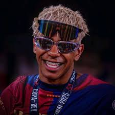
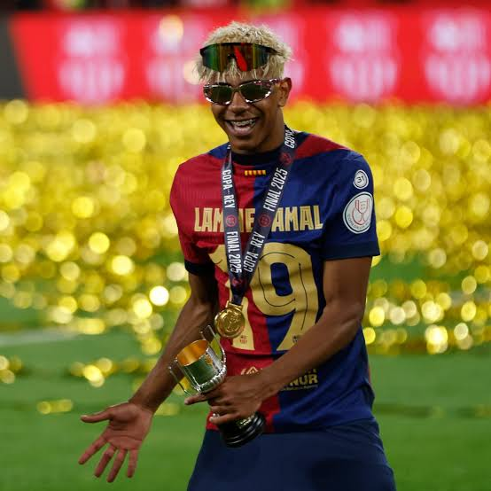
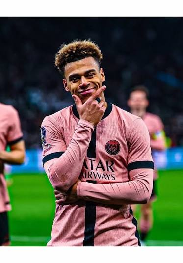
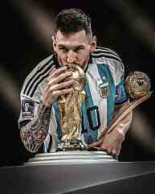

Crónica de la Champions League · Parque de los Príncipes
El Paris Saint-Germain derrotó 4-2 al Barcelona en un vibrante partido de la Champions League disputado en el Parque de los Príncipes, correspondiente a la tercera jornada de la fase de liga. El conjunto parisino se adelantó con un gol de Désiré Doué en el minuto 38, tras aprovechar un error en la salida de balón del Barcelona. En la segunda mitad, Xavi Espart empató para los blaugranas en el minuto 55, pero Lucas Hernández volvió a poner por delante al PSG con un cabezazo en el 72. Lamine Yamal igualó de nuevo con un golazo individual en el 79, sin embargo, Vitinha (81') y Fabián Ruiz (86') sentenciaron el encuentro en los minutos finales.
El partido evidenció la superioridad física y la profundidad de plantilla del vigente campeón de Europa frente a un Barcelona que compitió hasta el final pero acusó sus desajustes defensivos. El portero Joan García fue determinante para mantener a los catalanes en el partido con múltiples paradas, mientras que la defensa azulgrana sufrió ante la presión y las transiciones del PSG. Con este resultado, el PSG mantiene el pleno de victorias en la competición, mientras que el Barcelona encajó su primera derrota de la temporada tras once triunfos consecutivos.




El FC Barcelona, fundado en 1899 por Hans Gamper, es una institución que trasciende lo deportivo y se define por su identidad catalana, su modelo de propiedad de los socios y su vocación polideportiva. Bajo el lema "Més que un club", ha construido una historia ligada a Cataluña y a un estilo de juego ofensivo, con figuras como Kubala, Cruyff, Maradona y Messi, y una cantera emblemática como La Masia. Por su parte, el Paris Saint-Germain nació oficialmente en 1970 tras la fusión del Paris Football Club y el Stade Saint-Germain, y desde la llegada del capital catarí en la década pasada se consolidó como una potencia europea, aunque su gran salto llegó con la conquista de su primera Champions League en 2025 bajo la dirección de Luis Enrique.
La rivalidad entre ambos clubes se intensificó a partir de la temporada 2012-2013, cuando el PSG regresó a la élite europea y comenzó a cruzarse recurrentemente con el Barça en la Champions League. El punto de inflexión deportivo fue la remontada del Barcelona en 2017 (6-1 en el Camp Nou tras un 4-0 en contra), un episodio que marcó un antes y un después y que los parisinos respondieron en el mercado de fichajes con el pago récord de la cláusula de Neymar. Desde entonces, los enfrentamientos han sido frecuentes y muy igualados, con momentos como el hat-trick de Mbappé en 2021 y eliminatorias de cuartos de final que han mantenido viva la tensión competitiva entre ambos.
En los últimos años, la relación ha oscilado entre la tensión institucional y una progresiva distensión. Tras episodios de conflicto por fichajes y declaraciones, los presidentes de ambos clubes han acercado posturas en el ámbito de la European Football Clubs, mientras en lo deportivo el PSG, ya con Luis Enrique en el banquillo, se coronó campeón de Europa en 2025 y 2026, consolidando un proyecto que aspira a dejar atrás la sombra de las remontadas azulgranas y a establecerse como el gran dominador continental.